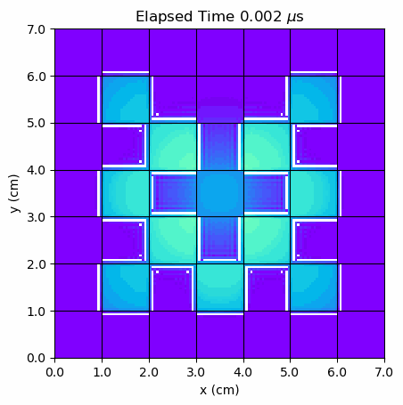
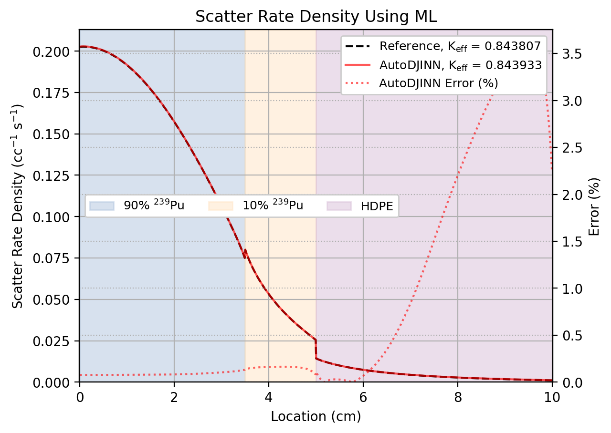
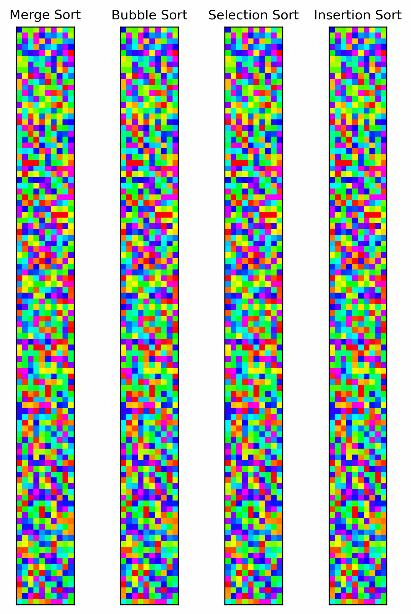

Welcome
I am a computational scientist at Los Alamos National Laboratory working on neutron transport, nuclear data, and machine learning. My research focuses on reinforcement learning for multigroup energy grid optimization, hybrid numerical methods, and solution verification; making deterministic transport solvers faster and more accurate.


